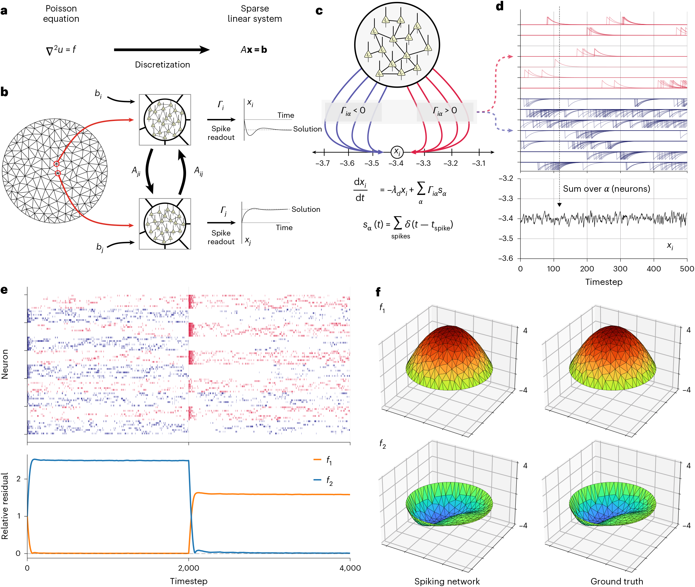
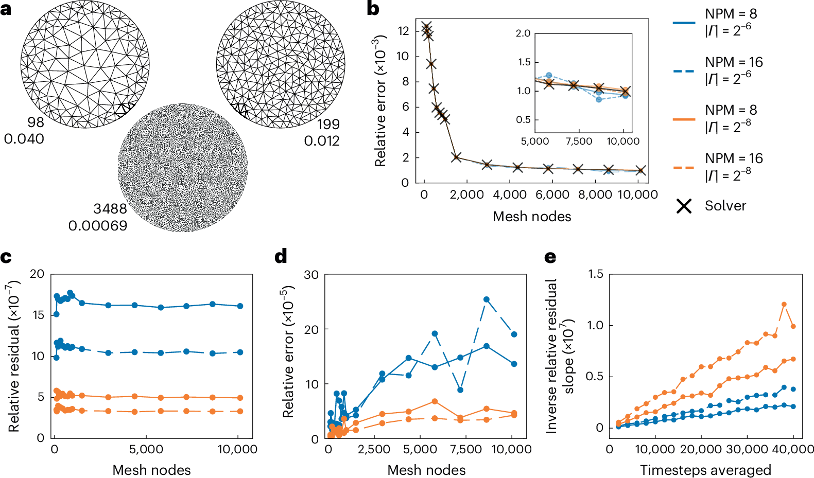
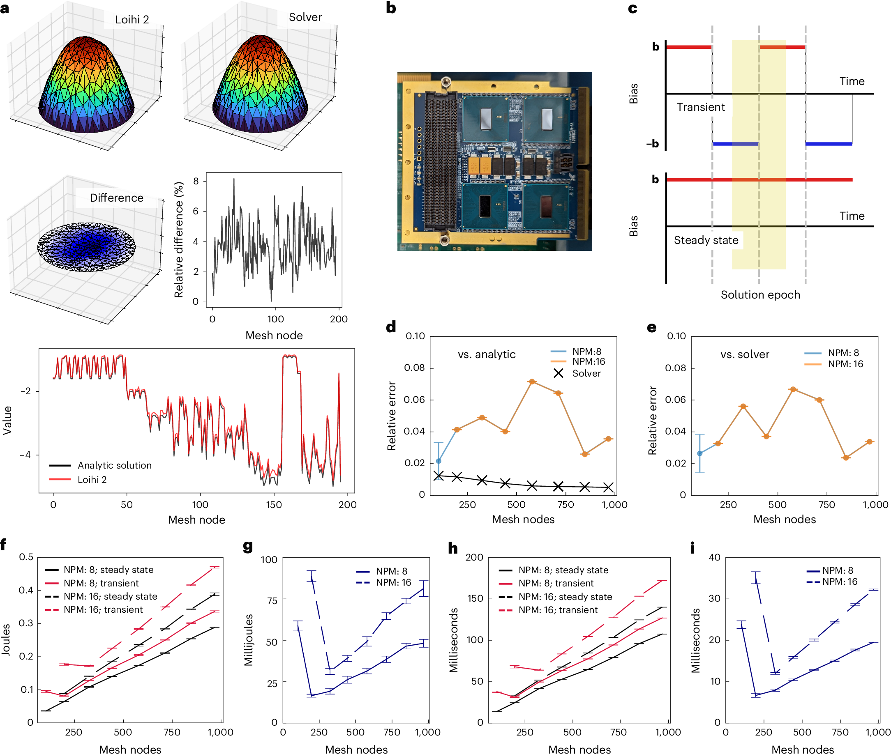
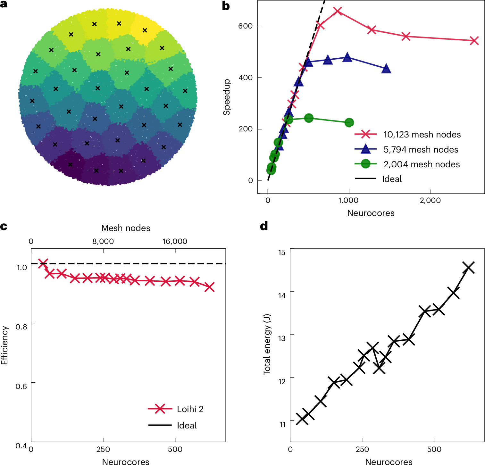
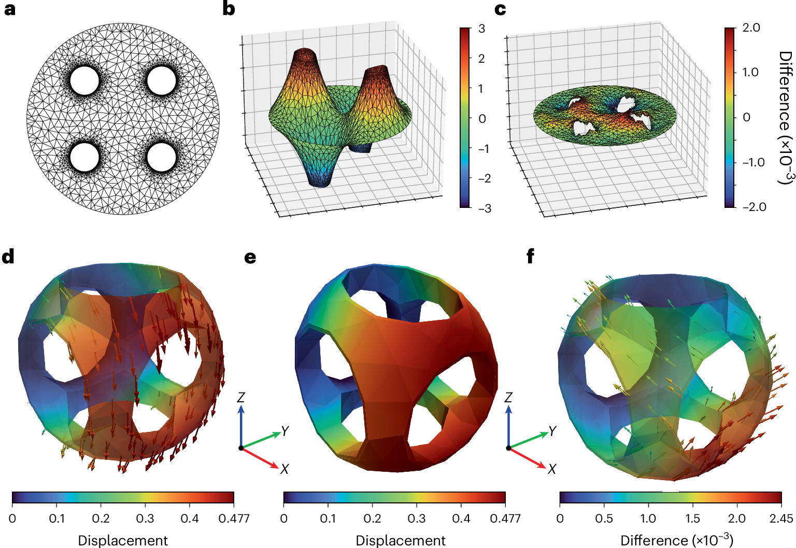

全文精读
在神经形态硬件上求解稀疏有限元问题
Solving sparse finite element problems on neuromorphic hardware
解读更新 2026-10-21 11:00 · 依据论文全文整理
全文精读已完成，文章版正在逐步升级。现有内容可继续阅读。
本文将有限元稀疏线性系统直接映射为无需训练的脉冲神经网络，通过局部比例—积分控制和脉冲滤波读出逼近数值解。研究在Loihi 2上检验定点精度与多芯片扩展，并以CPU模拟展示复杂几何和三维线弹性。其价值在于连接成熟有限元流程与新型硬件，但能效比较依赖测量口径，原文实现公式也存在缺项。解读：适合作为结构仿真的计算基础文献，而非生成式设计的直接方法。
研究问题
作者关注成熟有限元方法能否直接利用神经形态硬件，而不依赖训练代理网络。核心问题是把稀疏线性求解转化为局部、异步的脉冲计算，并检验数值精度与规模扩展是否可接受。研究针对求解阶段的数据通信负担，不改变有限元离散本身。
方法与路线
每个网格节点对应一组神经元，系统矩阵决定突触权重，右端项转换为偏置；读出矩阵将脉冲滤波为解估计。神经元积分局部残差，构成分布式比例—积分控制器。Loihi实现采用定点缩放、舍入和位移运算，以适配硬件精度限制。
创新与比较
关键贡献是直接编程既有有限元系统，而非学习输入到解的黑箱映射。作者加入积分状态，消除相关仅比例网络的稳态偏差；时序协调实验进一步支持输出不等同于均值叠加独立噪声。解读：创新集中于脉冲求解机制，而非新的有限元逼近理论。
证据与发现
浮点网络呈现分片线性有限元预期的二阶收敛，多芯片扩展在一定范围内接近理想表现。硬件结果并非全面优于CPU：传统迭代法更快，能耗优势依赖估算与额外开销口径。复杂线弹性仅在CPU模拟中展示，不能视为硬件验证。
局限与边界
原文缺积分状态及读出更新、噪声符号定义，且残差符号冲突，无法完整重建实现；缺残差分量标记，收敛条件缺符号限制，不能据此验证普遍收敛。另有小网格未收敛、代码专有及功耗估算限制。 原文核对： 原页正文的图2引用与实际面板、图注不一致：单位节点相对残差对应图2c而正文引用2d；与传统求解器的相对误差对应2d而正文引用2e；平均步数与残差斜率倒数的关系对应2e而正文引用2f，实际图2无f面板。统计性质段亦将残差关系引至2d。图与图注现有内容完整，可识读；此为原文交叉引用错位，不应据此补造图2f。； 图3h图注称其为每求解时段的执行时间，但原图h约0–200 ms的稳态/瞬态曲线与图3i约0–40 ms的每时段时间差及32时段测试口径存在不一致：h两模式间差值明显大于i，量级约差32倍，提示h可能展示整段运行时间。原页未明确澄清，不能擅自改写其单位或定义；不影响识读，但限制总耗时与每时段耗时的直接比较。； 慢突触公式Ω_slow=Γ^T AΓ之后，原页将Γ和Γ^T均描述为“the readout matrix”，未明确说明Γ^T是转置。公式与矩阵维度可读且完整，Γ^T应按转置符号理解；缺陷在文字定义，不影响现有公式识读。页末残差公式u_err,α=−u_1,α+Γ^T b还省略了向量项的α分量标记，按分量使用时须注意，不能把整个向量直接等同于单个神经元标量。； 原页在dx/dt=b−Ax之后称A的特征值只要同号、即定号就收敛。对所写动力系统，这一条件不充分：误差满足de/dt=−Ae，需要A特征值实部为正；负定矩阵不满足稳定条件。原式未缺项，但收敛条件文字缺少符号限制，不能据此宣称任意定号矩阵均收敛。； 原页称列出最终逐步定点更新方程，但仅展示ū₁、ū₂、ū_err、v̄四式，未列ū_int及读出更新；膜电位式中的n̄也未在此定义。残差式确实印为ū_err[n+1]=ū₁[n]+(Γ^T b的定点量)≪7，与连续模型的−u₁+Γ^T b符号不同，未说明是否另有符号约定。现有公式可读，但不足以完整重建实现，不能擅自补式或认定代码使用同一错误。； 原页轮询分配说明中，将核心索引c与节点索引m的关系印为m=c mod 128，与其文字描述方向相反。按所述分配逻辑应由节点索引确定核心索引，即c=m mod 128；原文未作此更正。影响节点到核心映射的复现，不影响页面识读。； 线弹性方法段原页将Gmsh引用标为12、SfePy标为16、17；同页参考文献12实际为脉冲网络论文，16、17为Loihi相关资料，而Gmsh和SfePy分别列于20及21、22。属于原文引文编号错配，影响工具来源追溯，不影响现有线弹性公式读取。； 扩展数据图6原页图注称残差比“depends linearly on the number of timesteps averaged”，但上排图在相同|Γ|下，N_avg由5,000增至10,000、20,000时残差比约依次减半，呈近似反比而非与步数正比。原图完整清楚，问题是图注未准确说明依赖方向；影响平均窗口与精度关系的表述，不应据此认为平均越久残差越大。； 扩展数据表2原页下注释确实写为“Energy differences”，但标题为runtime data，列标题为Mean Time Difference、Standard Deviation，单位均为Milliseconds，并指向图3i。属于原文注释误标，影响物理量解释；应读取为时间差，不能将表中数值当作能量。
方向关联
解读：与生成式设计的联系在于底层结构响应计算，而非形态生成或优化策略。传统装配工具接口和三维位移场示例支持探索求解模块迁移；偏置更新也启发在线运维估计。但论文没有设计质量、损伤识别或失效概率证据，相关应用仍待验证。
后续研究建议
建议先复现公开CPU模型，向作者核实缺失更新及符号，再统一精度、平均窗口和端到端测量口径。面向设计迭代，可测试矩阵变化后的重构成本；面向可靠性，可评估定点误差对响应尾部的影响。这些是后续研究建议，不是论文成果。
阅读建议
建议关注其无需训练的有限元映射、积分纠偏及硬件扩展机制；对于生成式设计研究，应作为潜在求解模块参考，不宜列为核心生成方法论文。
原图未改动。以下图注来自标注的来源，不据此补写摘要未报告的实验结论。
已取得的论文原图


原文图注与出处
a , The FEM converts PDEs (such as the Poisson equation shown here) on a domain into a sparse linear system through a discretization process. The solution of the sparse linear system gives coefficients for approximating the solution of the original PDE. b , The neuromorphic finite element algorithm (NeuroFEM) constructs a SNN from the sparse linear system. Each mesh node in the discretization contains a population of spiking neurons. The weights between these neural populations are determined by the elements of the linear system matrix. Each population receives a bias determined by the right-hand side of the linear system. The network’s construction ensures that the readout of the spiking activity flows to the solution of the linear system over time. c , Spikes from neurons within a single mesh node, represented as delta functions, project to output variables with weight Γ and are integrated through a first-order ordinary differential equation (bottom). Half the neurons in a node project with a positive readout weight and half with a negative weight. This tug-of-war between positive and negative projecting neurons pulls the readout variable to the required value. d , The effect of individual spikes is to add an exponentially decaying kernel to the readout variable. Red and blue traces indicate neurons with positive and negative readout weights, respectively. The sum of these kernels over all neurons in the node gives a fluctuating readout for the component of the linear system corresponding to this node ( x i ). e , NeuroFEM solves sparse linear systems. The activity of a NeuroFEM circuit constructed to solve the Poisson equation on a disk flows to the solutions with respect to two different right-hand sides f 1 and f 2 (top). The right-hand side switches from f 1 to f 2 at timestep 2,000. f , Three-dimensional plots of the NeuroFEM-generated solutions (left) with respect to right-hand sides f 1 (top) and f 2 (bottom) show close agreement with the ground-truth solutions generated by conventional linear solvers (right).
Theilman, Bradley H. et al.
原文图页 · CC BY 4.0

原文图注与出处
a , We evaluated NeuroFEM using the Poisson equation on a disk with Dirichlet boundary conditions as a benchmark problem. We increased the resolution of the mesh to assess how well NeuroFEM solutions converged to an analytic solution and compared with solutions generated by a conventional sparse linear solver (SciPy spsolve). Top numbers indicate the number of internal nodes, and bottom numbers indicate the maximum triangle area in the mesh. b , Left: the relative error with respect to the analytic solution of NeuroFEM and a conventional solver as a function of the mesh resolution. Right: legend for all panels. c , The relative residual of the linear system per mesh point for NeuroFEM is constant as a function of the number of mesh nodes. The relative residual is improved by increasing the number of neurons per mesh node and/or decreasing the readout magnitude | Γ |. d , The relative error between NeuroFEM solutions and solutions generated by a conventional solver. e , The relative residual improves linearly with the number of readout timesteps averaged together. Inverse relative residual slope is defined as the reciprocal of the constant relative residual per mesh node plotted in c . Steeper curves indicate greater improvement as the number of averaging timesteps increases.
Theilman, Bradley H. et al.
原文图页 · CC BY 4.0

原文图注与出处
a , Top: the NeuroFEM circuit on Loihi 2-generated solutions to the benchmark problem comparable to conventional solvers. Middle: the differences between the Loihi-2 generated solution and the conventional solution are localized to high-magnitude areas of the solutions. The relative deviation between the Loihi-2 solution and the conventional solver was consistent across mesh nodes at around 4% on average and a maximum of approximately 8%. Bottom: The Loihi-2 generated solution agrees in overall shape with the analytic solution, but large magnitude values show greater deviation. b , The Loihi 2 Oheo Gulch board used for this study. Each board has eight chips (four on the top and four on the bottom), and the full system has a stack of four boards. Our profiling studies were restricted to a single chip. c , Schematic of the profiling strategy. NeuroFEM circuits on Loihi 2 were run in two modes: transient (top) and steady state (bottom). In the transient mode, the bias was sign-inverted every 4,096 timesteps (a solution epoch) forcing the network to flow to a new solution. In the steady-state mode, the bias remained constant, keeping the network in its steady-state firing regime for the whole run. By comparing the energy and time difference between the two modes, we could estimate the energy and time required by each solution epoch. d , The relative error with respect to the analytic solution for Loihi 2-generated solutions and conventional solutions. The fixed-point nature of Loihi 2 leads to worse performance compared with the CPU simulations of NeuroFEM, but the performance does not grow inordinately in the range of mesh resolutions tested. The Loihi 2 implementation of the lowest-resolution mesh and 16 neurons per mesh node did not converge reliably, probably due to instabilities introduced by the fixed-point conversion and their outsized effect on such a small circuit. Error bars show the mean ± s.d. over ten separate runs. e , The relative error between the Loihi 2-generated solutions and conventional solutions. The curves are largely similar to d because the conventional solutions are already close to the analytic solution. Error bars show the mean ± s.d. over ten separate runs. f , Total energy required by each NeuroFEM model for 131,072 timesteps as a function of mesh resolution, neurons per mesh node, and run mode. Error bars indicate the mean ± s.d. over four separate runs. g , The energy difference per solution epoch for NeuroFEM models with either 8 or 16 neurons per mesh node. Error bars indicate the mean ± s.d. h , The execution time per solution epoch as a function of mesh resolution, neurons per mesh node, and run mode. Error bars indicate the mean ± s.d. i , The execution time difference per solution epoch for NeuroFEM models with either 8 or 16 neurons per mesh node. Error bars indicate the mean ± s.d.
Theilman, Bradley H. et al.
原文图页 · CC BY 4.0

原文图注与出处
a , An illustration of multi-chip partitioning of 10,123 node mesh across 32 chips. Each colour represents mesh points belonging to a given chip, and each ‘x’ is the centroid of mesh points on that chip. b , Strong scaling of NeuroFEM shows ideal scaling performance up to several hundred cores for models of fixed size. Beyond this point, scaling gains diminish in accordance with Amdahl’s law, as the model becomes too small to effectively utilize additional cores. c , Weak scaling of NeuroFEM shows near-ideal efficiency when model size increases with number of cores. d , Weak scaling of multi-chip NeuroFEM results in a modest increase in total energy consumption at a rate lower than 1, suggesting increased energy efficiency at scale. All simulations were run across all 32 chips for 131,072 timesteps.
Theilman, Bradley H. et al.
原文图页 · CC BY 4.0已取得的论文原图


原文图注与出处
a , Topologically non-trivial mesh with holes and spatially inhomogeneous mesh resolution. b , NeuroFEM-generated solution for the Poisson equation on the topologically non-trivial mesh with Dirichlet boundary conditions on the outer boundary and Neumann boundary conditions on inner hole boundaries. c , The difference between the NeuroFEM solution in b and the conventional solution. Differences are bounded in magnitude by 2 × 10 −3 . d , NeuroFEM solution to the linear elasticity equations on a topologically non-trivial tetrahedral (3D) mesh subject to a constant volume force density (gravity) in the – Z direction. The – X face is fixed in position, and the rest of the faces are free. The solution is now a vector field instead of a scalar field. e , The same as d but with the displacement vectors applied as a deformation of the original mesh. The solution agrees with the expectation of the hollow solid sagging under gravity. f , The difference between the NeuroFEM solution and a conventional solution. The magnitudes of the difference vectors are bounded by 2.45 × 10 −3 .
Theilman, Bradley H. et al.
原文图页 · CC BY 4.0查看公开摘要
The finite element method (FEM) is one of the most important and ubiquitous numerical methods for solving partial differential equations (PDEs) on computers for scientific and engineering discovery. Applying the FEM to larger and more detailed scientific models has driven advances in high-performance computing for decades. Here we demonstrate that scalable spiking neuromorphic hardware can directly implement the FEM by constructing a spiking neural network that solves the large, sparse, linear systems of equations at the core of the FEM. We show that for the Poisson equation, a fundamental PDE in science and engineering, our neural circuit achieves meaningful levels of numerical accuracy and close to ideal scaling on modern, inherently parallel and energy-efficient neuromorphic hardware, specifically Intel’s Loihi 2 neuromorphic platform. We illustrate extensions to irregular mesh geometries in both two and three dimensions as well as other PDEs such as linear elasticity. Our spiking neural network is constructed from a recurrent network model of the brain’s motor cortex and, in contrast to black-box deep artificial neural network-based methods for PDEs, directly translates the well-understood and trusted mathematics of the FEM to a natively spiking neuromorphic algorithm.